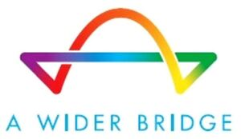

Trade Mark Journal No.2026/005 30 January 2026
WO0000001882578 (35,41,45)
Office of origin: United States of America
Date of International Registration:30 April 2025
Date of designation in the UK:
30 April 2025

The mark consists of a rainbow bridge with the phrase "A Wider Bridge" beneath it.
The entire mark.
International priority date claimed: 19 March 2025
(United States of America)
(99093198)
- Class 35
- Administration of cultural and educational exchange programs; charitable services, namely, promoting lgbtq life, politics and culture for others; charitable services, namely, providing a free online resource in the nature of a website for connecting people who have service needs with people who are willing to provide volunteer services; collection and compilation of information into computer databases in the field of lgbtq life, politics and culture; compilation of information into computer databases; management and compilation of computerised databases; promoting public awareness in the field of social welfare; providing business information in the field of social media; public advocacy to promote awareness of lgbtq life, politics and culture.
- Class 41
- Conducting guided tours of israel; educational services, namely, conducting informal on-line programs in the fields of lgbtq life, politics and culture, and printable materials distributed therewith; educational services, namely, conducting programs in the field of lgbtq life, politics and culture; on-line journals, namely, blogs featuring lgbtq life, politics and culture; organizing events in the field of lgbtq life, politics and culture for cultural or educational purposes; organizing and hosting of events for cultural purposes; providing on-line newsletters in the field of lgbtq life, politics and culture; providing online newsletters in the field of lgbtq life, politics and culture via e-mail; publication of electronic magazines; arranging and conducting educational conferences; providing information, news and commentary in the field of current events relating to the gay, lesbian, bisexual and transgender community.
- Class 45
- On-line social networking services; online social networking services in the field of lgbtq life, politics and culture; providing information relating to diverse human cultures, beliefs, and lifestyles; providing an on-line searchable database featuring information concerning the lifestyles of gay, lesbian, bi-sexual and transgender people; social networking services in the field of lgbtq life, politics and culture provided via a website; on-line gay, lesbian and bisexual social networking services; providing information in the field of social justice.
A Wider Bridge
Representative: Anthony J DoVale FisherBroyles LLP, 6800 Gulfport Blvd, Suite 201-310, St. Petersburg FL 33707, UNITED STATES OF AMERICA